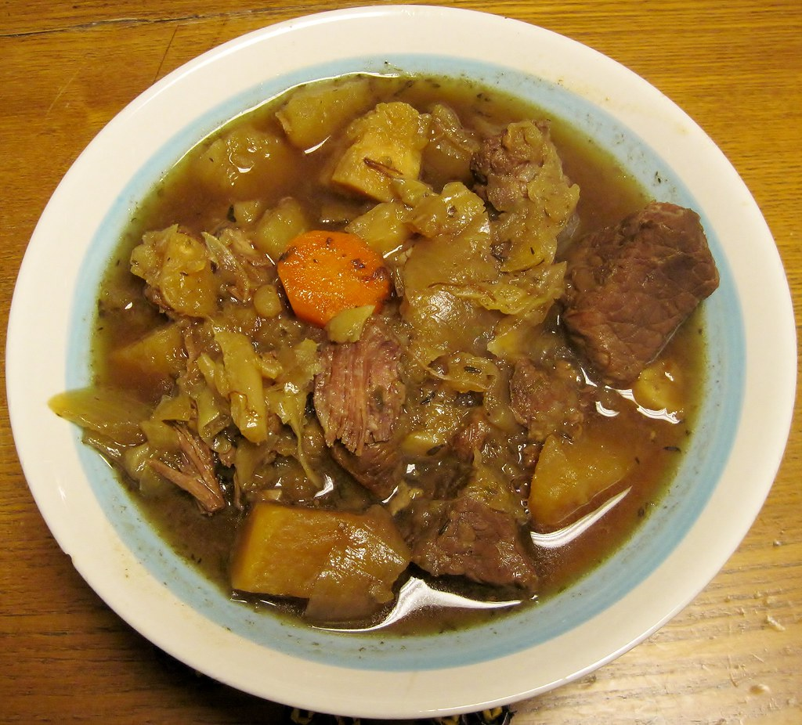

Fårikål
Fårikål er Norges nasjonal rett
Du trenger:
1,5kg Fårikålkjøtt
1,5kg hode kål
2ts hele pepperkorn
3stk laureblad
2ss mel
4dl vann
2ts salt
2stk persillerot
2stk hvitløksfedd
4ss smør
1 neve timian
0,5stk sitronsaft
Selvvalgt mengde rugbrød
